Để cài đặt phần mềm, doanh nghiệp thực hiện theo các bước sau đây:
Sau khi tải xong bộ cài về máy và giải nén ra sẽ được các file như sau, bạn chạy file Setup.exe.
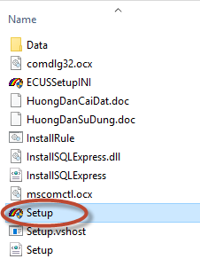
Chương trình cài đặt sẽ có giao diện như sau:
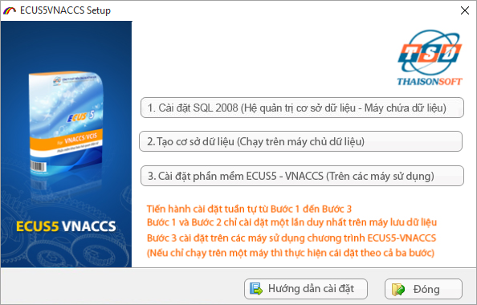
Thực hiện lần lượt các bước cài đặt theo các mục 1, 2, 3 theo hướng dẫn chi tiết.
Bước 2: Cài đặt SQL 2008
Nếu hệ thống của bạn đã cài đặt SQL Server 2008 thì không cần cài đặt bước này nữa.
Để cài SQL 2008 bạn kích chuột vào mục 1 trên màn hình cài đặt, chương trình sẽ tiến hành tải bộ cài SQL 2008 từ trên trang chủ màn sẽ hiện ra như sau:
Và thực hiện cài đặt tự động chương trình SQL 2008, bạn chờ đến khi SQL 2008 được cài đặt xong sẽ có một màn hình thông báo cấu hình hiện ra.
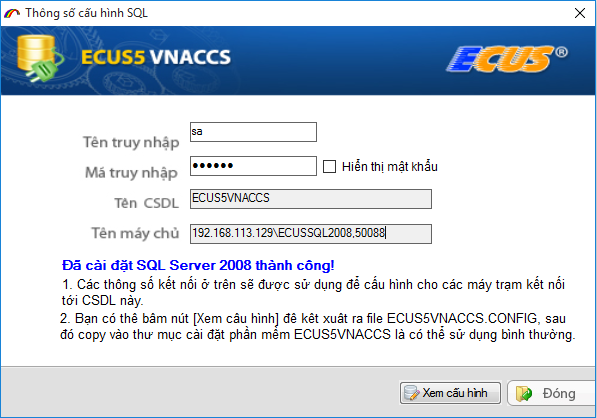
Bạn nhấn nút “Xem cấu hình” để xem thư mục lưu trữ file ECUS5VNACCS.CONFIG. Sau khi cài đặt chương trình thành công bạn cần coppy file ECUS5VNACCS.CONFIG vào thư mục ECUSDATA.
Bước 3: Tạo cơ sở dữ liệu
Chú ý: Chức năng này chỉ thực hiện trên máy chủ - máy lưu trữ dữ liệu – đã cài SQL 2008 mà bạn vừa tiến hành ở bước trên.
Cửa sổ tạo cơ sở dữ liệu hiện ra như sau:

Thư mục lưu dữ liệu được đặt ngầm định là D:\SQLDatas
Nếu máy của bạn không có ổ D thì bạn có thể chuyển sang ổ đĩa khác bằng cách sửa tên thư mục lưu dữ liệu, ví dụ: C:\SQLDatas
Trường hợp tạo mới CSDL (Cơ sở dữ liệu):
Chỉ dùng đối với doanh nghiệp lần đầu sử dụng chương trình ECUS hoặc khi bạn muốn tạo ra một CSDL trắng ( không có tờ khai, chứng từ )
Nếu chương trình kiểm tra thấy trong thư mục bạn lưu CSDL đã có file CSDL trước đó, chương trình sẽ hỏi bạn có muốn tạo CSDL từ những file CSDL trước đó không(khôi phục CSDL)
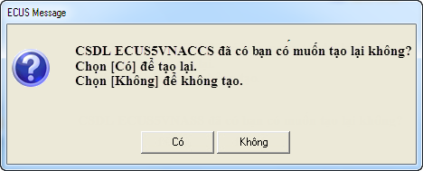
Nếu tạo mới CSDL từ những file đã có chọn “Có”, nếu tạo mới CSDL trắng chọn “Không”, trái lại chọn “Đóng” để bỏ qua
Trường hợp khôi phục CSDL trước đó:
Nếu trước đó bạn đã cài ECUS5VNACCS vì một lý do nào đó bạn thực hiện cài lại máy tính hoặc hệ quản trị MSDE, khi đó bạn phải tiến hành khôi phục lại dữ liệu từ những file dữ liệu đã có trước đó .
- Khôi phục từ file cơ sở dữ liệu đang dùng trước khi cài lại, loại file dạng như hình sau :

Hãy đảm bảo đây là file sử dụng mới nhất trước khi bạn cài lại máy tính hoặc cài lại MSDE.
Với dạng file này bạn chọn “
Từ file CSDL” sau đó “
Chọn file” để trỏ đường dẫn vào thư mục lưu trữ file này, chọn “
Thực hiện” và chờ có thông báo thành công :

- Khôi phục từ file sao lưu, là dạng file mà trong quá trình làm chương trình bạn thường xuyên sao lưu dự phòng (dạng tenfile.BAK), hãy đảm bảo file sao lưu của bạn là mới nhất, dữ liệu khôi phục sẽ có đến ngày bạn sao lưu :

Với dạng file này bạn chọn lựa chọn “ Từ file sao lưu” và trỏ đường dẫn tới vị trí lưu file, sau đó thực hiện và chờ kết quả thành công :

Bước 4: Cài đặt chương trình
Kích chuột vào mục 3 .Cài đặt máy trạm ECUS5-VNACCS chương trình cài đặt sẽ hiện ra như sau.
Chọn nút Next > để tiếp tục, Chọn thư mục cài đặt chương trình ở cửa sổ tiếp theo

Nhấn “Next” để tiến trình cài đặt tự động bắt đầu

Khi chương trình hiện ra thông báo cài đặt thành công bạn chọn Restart để hoàn thành việc cài đặt.
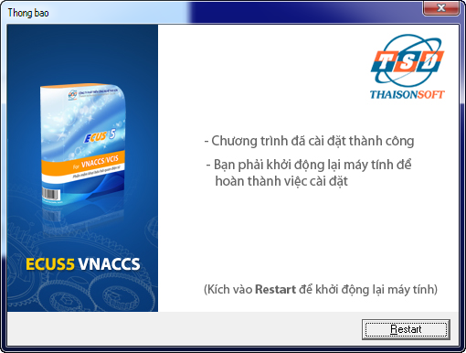
(Sau khi khởi động lại máy, trên màn hình của bạn xuất hiện biểu tượng
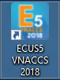
thì việc cài đặt đã hoàn thành, bạn có thể bắt đầu sử dụng chương trình)
Bước 5: Đăng ký để sử dụng chương trình
Để sử dụng chương trình bạn kích đúp chuột vào biểu tượng trên màn hình.
Lần đầu đăng nhập, bạn hãy sử dụng tài khoản mặc định với tên truy nhập “Root” và mật khẩu để trắng rồi ấn vào truy nhập, lưu ý bạn không cần thiết lập gì thêm cho lần đăng nhập đầu tiên này:
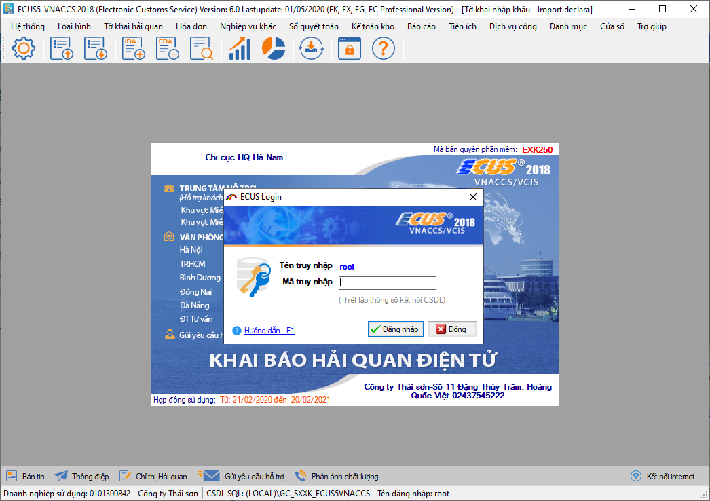
Đăng nhập thành công, phần mềm sẽ hiện ra màn hình đăng ký thông tin doanh nghiệp sử dụng chương trình:
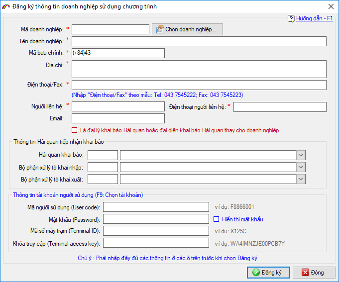
Tại phần thông tin doanh nghiệp, bạn nhập đầy đủ các chỉ tiêu thông tin: Mã số thuế, Tên doanh nghiệp, Địa chỉ....Nếu doanh nghiệp là đại lý khai báo hải quan hoặc đại điện khai báo cho doanh nghiệp khác, bạn đánh dấu tích chọn vào mục tương ứng:
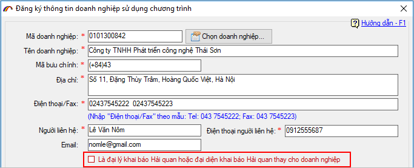
Nếu bạn cài lại máy tính, cài lại phần mềm và sử dụng cở sở dữ liệu của phần mềm ECUS5VNACCS trước đó, bạn nhấn vào nút "Chọn doanh nghiệp" để chọn lại thông tin đã đăng ký:
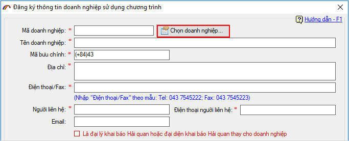
Danh sách thông tin doanh nghiệp đã đăng ký hiện ra, bạn chọn vào thông tin doanh nghiệp rồi nhấn nút "Chọn":
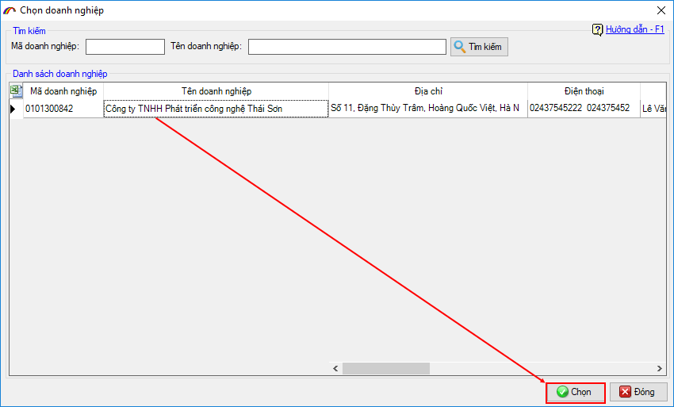
Phần thông tin hải quan tiếp nhận và tài khoản khai báo VNACCS, bạn nhập vào sau đó nhấn nút "Đăng ký" để hoàn tất:
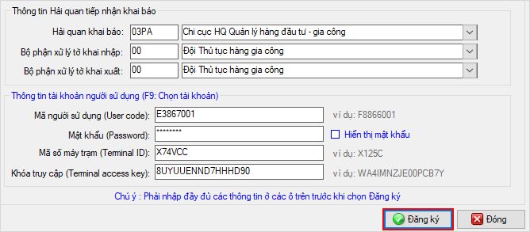